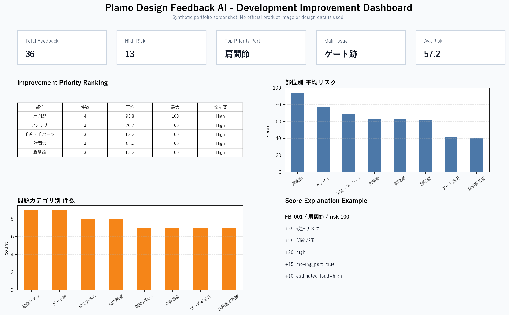
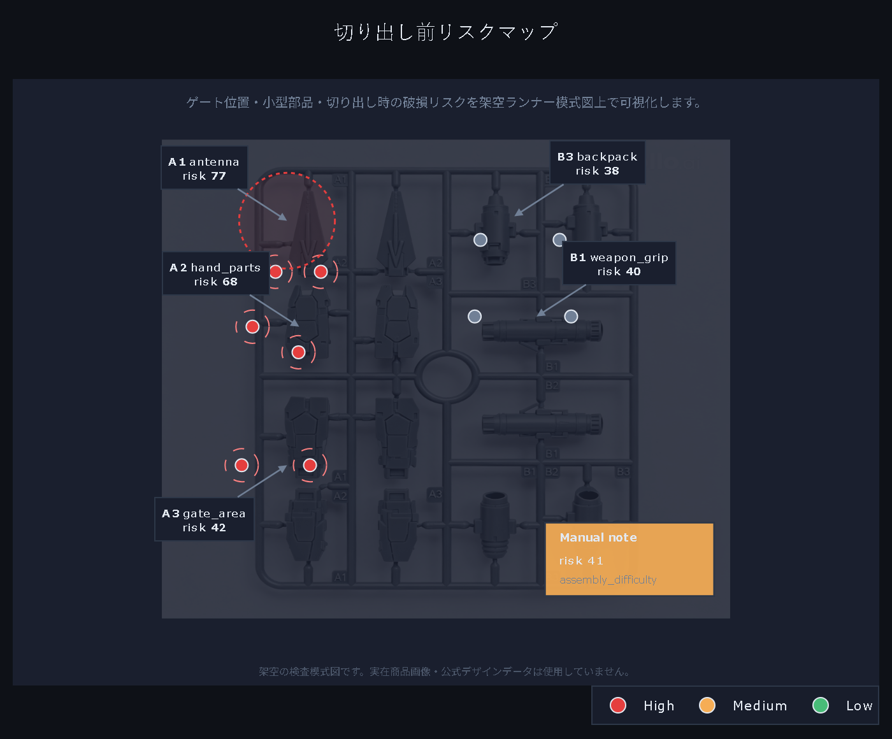
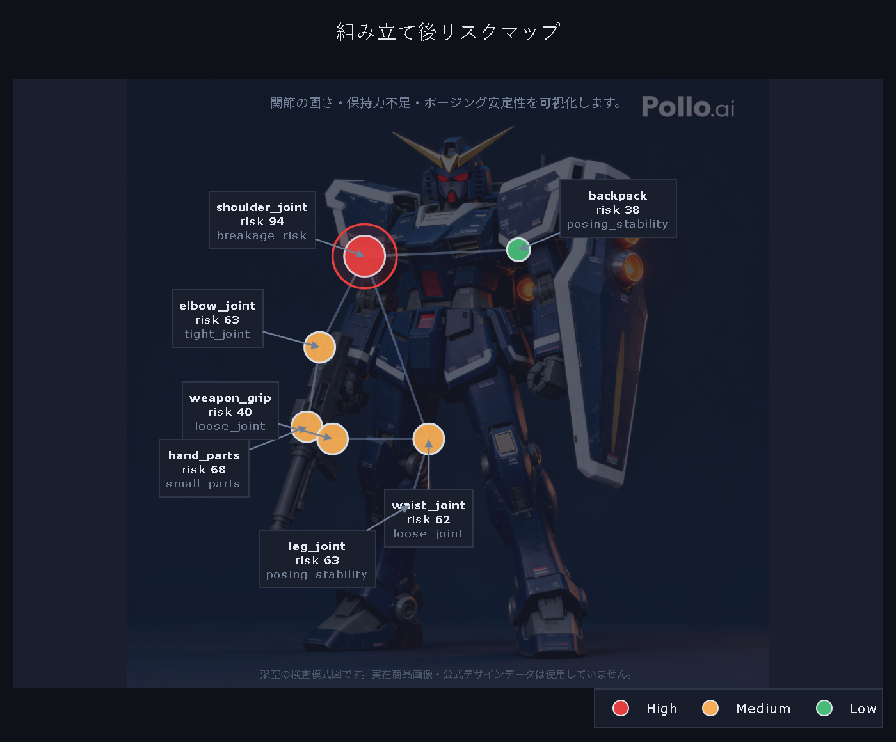

根拠検証付きRAGで、日本語QAの幻覚を抑える
検索拡張生成の回答に対して、証拠の十分性を見て棄権できるルールを設計。 JaQuAD派生データ、統計分析、人手評価まで含めて、研究として提出可能な形に整えた。
全体正答率 66.7% → 100.0%、未支持主張率 33.3% → 0.0% 36問の合成制御コーパスで、標準BM25-RAGと提案手法を比較。
- 技術: Python、RAG、評価スクリプト、統計分析
- 担当: データ作成、実験設計、分析、論文草稿作成
- 期間: 2026年制作

Articles
面接で話しやすいように、課題、実装、検証、学びの順で読める構成にしています。



この研究では、RAGが「答えらしさ」だけで回答してしまう問題に対して、 検索された証拠が質問の要求を満たしているかを確認し、不十分なら棄権する仕組みを実装した。 外部APIに依存しない決定的な実験スクリプトを用意し、結果の再現性を優先している。 36問の合成制御コーパスはBM25-RAGの失敗パターンを確認するための小規模評価であり、実データへの汎用性検証は今後の課題です。
全体正答率 66.7% → 100.0%、回答不能質問の保留率 0.0% → 100.0%、未支持主張率 33.3% → 0.0% 標準BM25-RAGとEvidence-Verified RAGを36問の制御データで比較。
AIエンジニアとして、モデルを使うだけでなく、失敗条件を定義し、評価可能な形に落とし込む力を示すための研究です。
回答生成の前に、証拠十分性、要求属性、回答可能性を分けて扱い、誤答を無理に生成しない設計にした。
500問規模のテンプレート拡張、JaQuAD派生データ、McNemar検定、ブートストラップ信頼区間、人手評価を整理した。
AIの性能改善では、モデル選択だけでなく、失敗時の振る舞いと評価設計が重要だと学んだ。
自由記述レビューを、設計改善に使える分類・スコア・改善案へ変換するプロトタイプ。 Streamlitで入力、集計、グラフ、リスクマップ、Markdownレポートを一通り確認できるようにした。
Streamlit Community Cloudで公開済み https://plamo-design-feedback-ai.streamlit.app/
AIを業務に組み込む場面を想定し、入力、分析、可視化、レポート出力までを小さく完結させたプロダクト型の成果物です。
ルールベースで始め、あとからLLMや画像解析を差し替えやすいように、分析、採点、改善案生成を分離した。
単体テスト、Streamlitの起動スモーク、README用画像生成をCIで確認できる構成にした。
AIを単体で見せるより、業務の判断材料に落とす画面設計が価値につながると分かった。
日本ETFのデイトレ監視を想定し、MarketSpeed II RSS、PCブリッジ、スマホ側ダッシュボード、 ペーパー売買ランナーを組み合わせたローカル運用ツール。
AI要素を前面に出す成果物ではなく、AIプロダクトにも必要なデータ取得、監視、ログ、実行制御を分けて安全に運用する設計力を示すサンプルです。
市場データ取得と売買判断を分け、実注文を設定で無効化。安全に検証できる構成にした。
Pythonのコンパイルチェック、unittest、運用README、スマホ起動補助スクリプトを用意した。
金融系ツールは機能より先に、安全側に倒れる設計とログ・除外設定が重要だと学んだ。
Blender向けのモデル生成スクリプトとOBJ出力を作り、模型AIの検証に使える画像アセットも整備。 完成品だけでなく、ランナー状態や部品検査という工程に注目した。
Plamo Design Feedback AIの付属データ準備として、AIモデルや分析ツールに入れる前段のデータ作成・検証素材づくりまで扱えることを示す成果物です。
見栄えだけでなく、分析対象として扱いやすい部品番号、ゲート位置、検査ポイントを意識した。
OBJ出力と画像アセットを分け、AI分析ツール側で読み込める材料として整理した。
生成物は単体で終わらせず、別のツールの入力データにするとポートフォリオ全体のつながりが出る。
Process
誰のどんな困りごとに向けた成果物かを、最初の3行で伝える。
採用技術の羅列ではなく、なぜその分割や評価方法にしたかを書く。
テスト、実験、失敗例、未解決の課題を隠さず書くと、面接で深掘りされても説明しやすい。
Profile
栗原宏雅 / 創価大学大学院 修士課程、2027年3月修了予定。AIセキュリティ、信頼性評価、RAGの根拠検証を中心に研究しています。 AIエンジニア、機械学習・データ分析、AI活用プロダクト開発に関わる職種を志望しています。 研究としての検証と、実用ツールとしての使いやすさを両方意識し、データ作成、実験、可視化、テスト、公開まで自分で進めています。 GitHub: https://github.com/kur11208 / 連絡先: piromasa1234@gmail.com